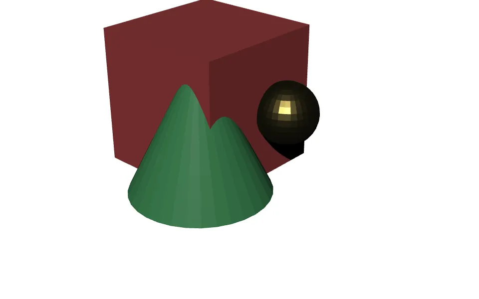
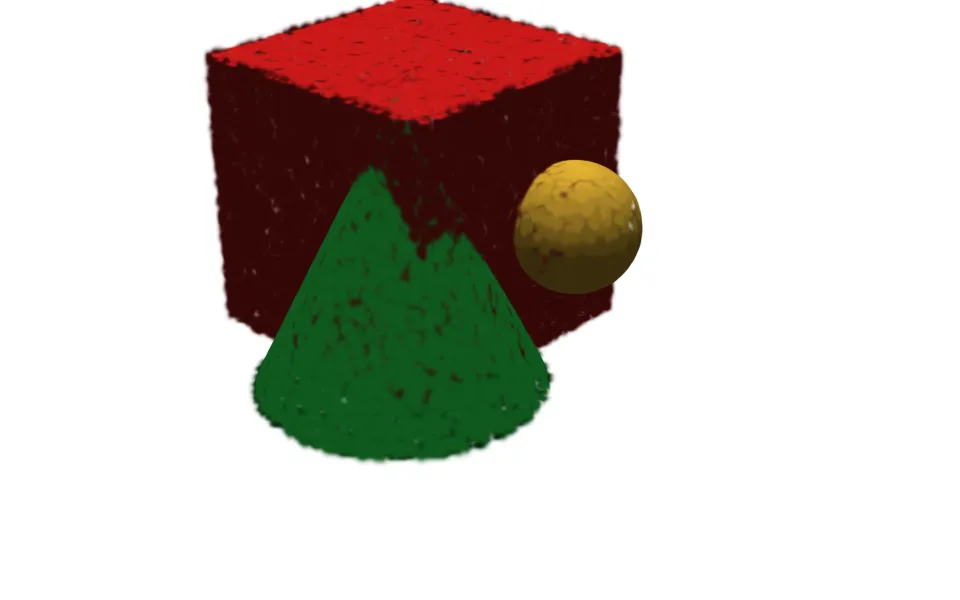

The exporter now writes a Blender splat object as a KHR_gaussian_splatting glb beside the scene, and the X3D file points at it with one Inline. Below, the same still life (cube, sphere, cone) is drawn as a mesh and as 30,000 splats. The splats are not trained. They are sampled on the mesh surface, so this page shows what the add-on does with a splat object, not what a trainer would produce.
v4: the page counts only the panes you started: loading the mesh alone no longer leaves the page waiting for the splat pane you never opened, and the X_ITE viewer file now has its own deadline, so a request that never answers ends in that pane's reason and a Retry button instead of a pane stuck on "Loading…". v1, v2 and v3 are kept unchanged.
v3: each live pane now keeps its own state. If one pane stalls or fails, that pane shows the reason and a Retry button while the other keeps running, and the page is told it is ready only after every started pane is live. v2 let the first pane to load mark the whole page ready. v1 and v2 are kept unchanged; v3 reads scenes, pictures and X_ITE from the v1 folder.
X_ITE 16.7.1 (bundled with the ROUTE demo, ../../blender-route/v1/vendor/x_ite). Drag to orbit. Each pane loads on click.

mesh · X3D 4.1
30,000 splats · glb Inline| File | What it is | Bytes |
|---|---|---|
| still-life-mesh.x3d | mesh scene (X3D 4.1) | 42,184 |
| still-life-splats.x3d | one Transform, one Inline url="StillLifeSplats.splats.glb" | 1,627 |
| StillLifeSplats.splats.glb | KHR_gaussian_splatting, 30,000 splats | 1,681,280 |
| still-life.blend | the Blender source (Blender 5.2.4) | 481,854 |
Measured with os.path.getsize on the files in this folder (Python 3.13). The build receipt is receipts/build-receipt.json.
x3d_splat_glbtools/splat_demo.py builds this page's scenes: it samples 30,000 points on the surface of the triangles (seed 7, area-weighted), turns each into a flat disc tangent to the surface, and colours it with the material's base colour times a baked Lambert term from the sun. tools/splat_capture.py is the other half: Fibonacci-sphere cameras, rendered images, transforms_train.json and a seed points3d.ply for a trainer.
splat_capture.py output (the loop Blender → images → splats → X3D is half closed).x3d-blender-fidelity/v1 (x3d.loom) have no comparator yet.